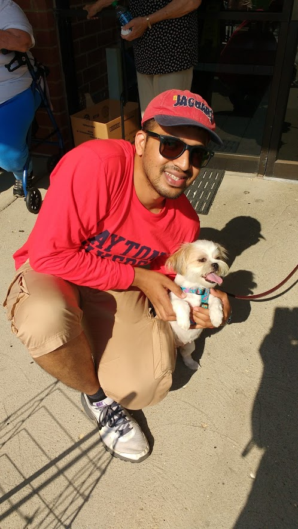

Venkat Malipeddi
show my email
(937) 979-7829
Areas of interest
Application Development
Content Management
Producer Company Management System(web)
Local messenger using java
Foodbank's garden survey (mobile)
Training Administration System(web)
The Foodbank's E-verification System(web)
UD International tax calculator (mobile)
Other interests
Nature
Kayaking
Cooking
Community Service
SUMMARY
• Over 4 years of experience in development, support & implementation of software applications
• Open & adaptive to work with new tools, technologies & domains
EDUCATION
Master of Computer Science May 2017
University of Dayton, Dayton, Ohio, United States of America.
Bachelor of Technology in Computer Engineering May 2014
GITAM University, Hyderabad, Telangana, India.
SKILLSET
Programming : C, C#, Java, SQL, UNIX, JavaScript, PHP, HTML, XML & CSS
Servers & Databases: Apache, XAMPP, WAMPP, IIS, Glassfish, MySQL, Oracle , MS Access & SQL Server
ECM tools : IBM P8 Suite(FileNet & CMOD),Websphere,Case Manager
Others Tools: Android Studio, Netbeans, Eclipse, Visual Studio, CMOD & Cognos, Cascade Server and Sharepoint Server.
WORK EXPERIENCE
• Graduate Assistant , University of Dayton, Dayton, OH Aug 2015-June 2017
Assisted various academic departments and UD Research Institute divisions in various teaching, research, and information technology projects with web content management, development, data analysis and teaching
• Systems Engineer-3, Infosys Ltd. (NYSE: INFY), Hyderabad, India Jun 2014-Jun 2015
Worked with IBM Content Management Tools for a Fortune 50 company in USA in banking & insurance domain
• Analyst Intern, RailTel Corp-Govt. of India Hyderabad, India Apr 2014-Sep 2013
Developed and configured ERP system and a Drupal based employee feedback and performance monitoring system
LEADERSHIP AND AWARDS
• Faculty nominated and awarded “Graduate Student Showcase award” for the above graduate research project
• Awarded best poster award in “SOCHE-AFIT Cyber Research Symposium 2017”
STEM Teaching Volunteer, Ruskin PK-8 school - Miracle Maker program June 2016
• Demonstrated various science experiments to middle school students during Summer 2016
Social Chair, Indian Student Association (SGA) - University of Dayton Jan 2016-May 2017
• Organized community food drive and tax filing assistance work shop to help international students in filing their taxes